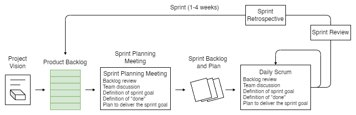
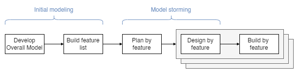
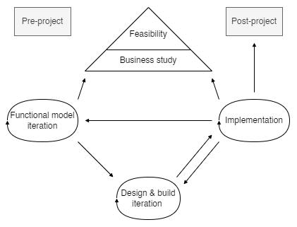
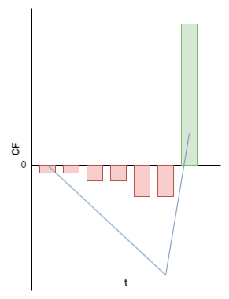
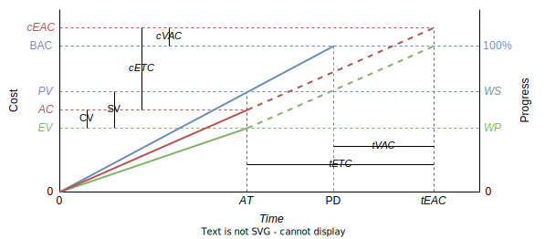

Agile Domains, Tools, and Techniques#
Notes from Mike Griffith, PMI-ACP Exam Prep, Second Edition.
Introduction#
Domains#
Domain |
Weight |
Sub-Domain |
|---|---|---|
Agile Principles and Mindset |
16% |
|
Value-Driven Delivery |
20% |
Define Positive Value |
Avoid Potential Downsides |
||
Prioritization |
||
Incremental Development |
||
Stakeholder Engagement |
17% |
Understand Stakeholder Needs |
Ensure Stakeholder Involvement |
||
Manage Stakeholder Expectations |
||
Team Performance |
16% |
Team Formation |
Team Empowerment |
||
Team Collaboration and Commitment |
||
Adaptive Planning |
12% |
Levels of Planning |
Adaptation |
||
Agile Sizing and Estimation |
||
Problem Detection and Resolution |
10% |
|
Continuous Improvement (Product, Process, People) |
9% |
Tools and Techniques#
Toolkit |
Tool/Technique |
|---|---|
Agile Analysis and Design |
Product Roadmap |
User Stories/Backlog |
|
Story Maps |
|
Progressive Elaboration |
|
Wireframes |
|
Chartering |
|
Personas |
|
Agile Modeling |
|
Workshops |
|
Learning Cycle |
|
Collaboration Games |
|
Agile Estimation |
Relative sizing/story points/T-shirt sizing |
Wide ban Delphi/Planning Poker |
|
Affinity Estimation |
|
Ideal Time |
|
Communications |
Information Radiator |
Team Space Agile Tooling |
|
Osmotic Communications for Co-located and/or Distributed Teams |
|
Two-way Communications (Trustwhorty, Conversation Driven) |
|
Socia-media based Communication |
|
Active Listening |
|
Brainstorming |
|
Feedback Methods |
|
Interpersonal Skills |
Emotional Intelligence |
Collaboration |
|
Adaptive Leadership |
|
Servant Leadership |
|
Negotiation |
|
Conflict Resolution |
|
Metrics |
Velocity/Throughput/Productivity |
Cycle Time |
|
Lead Time |
|
EVM for Agile Projects |
|
Defect Rate |
|
Approved Iterations |
|
Work in Progress |
|
Planning, Monitoring, and Adapting |
Reviews |
Kanban Board |
|
Task Board |
|
Timeboxing |
|
Iteration and Release Planning |
|
Variance and Trend Analysis |
|
WIP Limits |
|
Daily Stand Ups |
|
Burn down/up Charts |
|
Cumulative Flow Diagram |
|
Backlog Grooming/Refinement |
|
Product-feedback Loop |
|
Process Improvement |
Kaizen |
Five WHYs |
|
Retrospectives, Intraspectives |
|
Process Tailoring/Hybrid Models |
|
Value Stream Mapping |
|
Control Limits |
|
Pre-mortem (Rule Setting, Failure Analysis) |
|
Fishbone Diagram Analysis |
|
Product Quality |
Frequent Verification and Validation |
Definition of Done |
|
Continuous Integration |
|
Testing, Including Exporatory and Usability |
|
Risk Management |
Risk Adjusted Backlog |
Risk Burn Down Graphs |
|
Risk-based Spike |
|
Architectural Spike |
|
Value-Based Prioritization |
ROI/NPV/IRR |
Compliance |
|
Customer Value Prioritization |
|
Requirements Reviews |
|
Minimal Viable Product (MVP) |
|
Minimal Marketable Feature (MMF) |
|
Relative Prioritization/Ranking |
|
MoSCoW |
|
Kano Analysis |
Agile Principles and Mindset#
The Agile Mindset#
Declaration of Interdependence (DOI)#
Written in 2005 by Agile Project Leadership Network
Six Precepts:
We increase return on investment by making continuous flow of value our focus.
We deliver reliable results by engaging customers in frequent interactions and shared ownership.
We expect uncertainty and manage for it through iterations, anticipation, and adaptation.
We unleash creativity and innovation by recognizing that individuals are the ultimate source of value, and creating an environment where they can make a difference.
We boost performance through group accountability for results and shared responsibility for team effectiveness.
We improve effectiveness and reliability through situationally specific strategies, processes, and practices.
The Agile Triangle#
Methodology |
Constraint |
Variable |
|---|---|---|
Predictive |
Scope |
Time, Cost |
Agile |
Time, Cost |
Scope |
The Agile Manifesto#
Four Values#
Individuals and interactions over processes and tools
Working software over comprehensive documentation
Customer collaboration over contract negotiation
Responding to change over following a plan
Twelve Principles#
Our highest priority is to satisfy the customer through early and continuous delivery of valuable software.
Welcome changing requirements, even late in development. Agile processes harness change for the customer’s competitive advantage.
Deliver working software frequently, from a couple of weeks to a couple of months, with a preference to the shorter timescale.
Business people and developers must work together daily throughout the project.
Build projects around motivated individuals. Give them the environment and support they need, and trust them to get the job done.
The most efficient and effective method of conveying information to and within a development team is face-to-face conversation.
Working software is the primary measure of progress.
Agile processes promote sustainable development. The sponsors, developers, and users should be able to maintain a constant pace indefinitely.
Continuous attention to technical excellence and good design enhances agility.
Simplicity—the art of maximizing the amount of work not done—is essential.
The best architectures, requirements, and designs emerge from self-organizing teams.
At regular intervals, the team reflects on how to become more effective, then tunes and adjust sits behavior accordingly.
Agile Methodologies#
Scrum
Extreme Programming (XP)
Lean Product Development
Kanban
Feature-driven Development (FDD)
Dynamic Systems Development Method (DSDM)
Crystal
Scrum#
Process#
 |
|---|
Scrum Process |
Principles#
Transparency
Inspection
Adaptation
Values#
Focus
Courage
Openness
Commitment
Respect
Sprints#
Sprint = timeboxed iteration of < 1 month
No changes affecting the sprint goal are made throughout the sprint
Scope can be clarified/renegotiated as new information becomes available
Can be cancelled by Product Owner before timebox is over due to
goal becomes obsolete
change in business direction/technology conditions
sequence of Activities
Sprint Planning Meeting
Development period
Daily scrums
Sprint review meeting
Sprint retrospective meeting
Team Roles#
Product Owner
Scrum Master
Development Team
Activities (Events/Ceremonies)#
Product Backlog Refinement
Sprint Planning Meeting
Daily Scrums
Sprint Reviews
Sprint Retrospectives
Artifacts#
Product Increment
Product Backlog
Sprint Backlog
Extreme Programming (XP)#
Core Values#
Simplicity
Communication
Feedback
Courage
Respect
Team Roles#
Coach
Customer
Programmers
Testers
Practices#
Whole Team
Planning Games
Small Releases
Customer Tests
Collective Code Ownership
Code Standards
Sustainable Pace
Metaphor
Continuous Integration
Test-Driven Development
Refactoring
Simple Design
Pair Programming
Lean Product Development#
Core Concepts#
Eliminate waste
Empower team
Deliver fast
Optimize the whole
Build quality in
Defer decisions
Amplify learning
Seven Wastes#
Partially done work
Extra processes
Extra features
Task switching
Waiting
Motion
Defects
Kanban#
To Do |
In Progress |
Done |
|---|---|---|
G |
C |
A |
H |
D |
B |
I |
E |
|
J |
F |
Principles#
Visualize workflow
Limit WIP
Manage flow
Make process policies explicit
Improve collaboratively
WIP Limits#
\(\downarrow\) WIP \(\rightarrow\) \(\uparrow\) Team’s productivity
Little’s Law: \(Queue.Duration = m(Queue.Size)\)
Backlog |
Selected (4) |
Develop (3) |
Acceptance (2) |
Deploy |
|---|---|---|---|---|
L |
I |
F |
E |
A |
M |
J |
G |
B |
|
N |
K |
H |
C |
|
O |
D |
|||
P |
||||
Q |
Feature-driven Development (FDD)#
Process#
 |
|---|
FDD Process |
Practices#
Domain object modeling
Developing by feature
Individual class (code) ownership
Feature teams
Inspections
Configuration management
Regular builds
Visibility of progress/results
Dynamic Systems Development Method (DSDM)#
Process#
 |
|---|
DSDM Process |
Principles#
Focus on the business needs
Deliver on time
Collaborate
Never compromise quality
Build incrementally from firm foundations
Develop iteratively
Communicate continuously and clearly
Demonstrate control
Crystal#
Crystal = family of situationally specific, customzied methodologies coded by color names
\(Criticality = f(Defect.Impact)\)
Criticality |
Clear |
Yellow |
Orange |
Red |
Magenta |
|---|---|---|---|---|---|
Life |
L6 |
L20 |
L40 |
L100 |
L200 |
Essential funds |
E6 |
E20 |
E40 |
E100 |
E200 |
Discretionary funds |
D6 |
D20 |
D40 |
D100 |
D200 |
Comfort |
C6 |
C20 |
C40 |
C100 |
C200 |
Team size |
1-6 |
7-20 |
21-40 |
41-100 |
101-200 |
Agile Leadership#
Align project objectives with personal objectives to improve productivity
Management versus Leadership#
Management Focus |
Leadership |
|---|---|
Tasks/things |
People |
Control |
Empowerment |
Efficiency |
Effectiveness |
Doing things right |
Doing the right things |
Speed |
Direction |
Practices |
Principles |
Command |
Communication |
Servant Leadership#
Duties#
Shield the team from interruptions
Remove impediments to progress
Communicate
“Carry food and water”
Value-Driven Delivery#
Assessing Value#
Financial Assessment Metrics#
Return on Investment (ROI)#
Formula: \(ROI = Investment.Benefits/Investment.Cost\)
Interpretation: \(ROI>1\)
Present Value (PV)#
Formula: \(PV = FV_t/(1+r)^t\)
Net Present Value (NPV)#
Formula: \(NPV=\sum_{t=0}^{T} CF_t/(1+r)^t\)
Interpretation:
IF \(NPV>0\) THEN accept ELSE reject
Select project with higher \(NPV\)
 |
|---|
NPV calculation |
Internal Rate of Return (IRR)#
Formula: \(IRR = r : NPV(r) = 0\)
Interpretation:
IF \(IRR>r\) THEN accept ELSE reject
Select project with higher \(IRR\)
|
|---|
IRR graphical derivation |

Earned Value Management#
 |
|---|
EVM calculation |
Symbol |
Formula |
Name |
|---|---|---|
\(AT\) |
Actual Time |
|
\(WS\) |
Work Scheduled |
|
\(WP\) |
Work Performed |
|
\(\mathrm{BAC}\) |
Budget at Completion |
|
\(\mathrm{PD}\) |
Planned Duration |
|
\(AC\) |
Actual Cost |
|
\(PV\) |
\(\mathrm{BAC} \cdot WS\) |
Planned Value |
\(EV\) |
\(\mathrm{BAC} \cdot WP\) |
Earned Value |
\(CV\) |
\(EV-AC\) |
Cost Variance |
\(SV\) |
\(EV-PV\) |
Schedule Variance |
\(CPI\) |
\(EV/AC\) |
Cost Performance Index |
\(SPI\) |
\(EV/PV\) |
Schedule Performance Index |
\(cEAC\) |
\(\mathrm{BAC}\) |
Cost Estimate at Completion |
\(\mathrm{BAC}-CV\) |
||
\(\mathrm{BAC}/CPI\) |
||
\(tEAC\) |
\(\mathrm{PD}\) |
Time Estimate at Completion |
\(\mathrm{PD}/SPI\) |
||
\(cETC\) |
\(cEAC-AC\) |
Cost Estimate to Complete |
\(tETC\) |
\(tEAC-AT\) |
Time Estimate to Complete |
\(cVAC\) |
\(cEAC-\mathrm{BAC}\) |
Cost Variance at Completion |
\(tVAC\) |
\(tEAC-\mathrm{PD}\) |
Time Variance at Completion |
Agile Project Accounting#
Break down product/service into MVP
Deliver MVP asap
Exploit opportunities for early benefits by using part of the product/service while completing the remainder
Key Performance Indexes#
Rate of Progress
Remaining Work
Likely Completion Date
Likely Costs Remaining
Regulatory Compliance#
Regulations \(\rightarrow \) safety
A project that is subejct to regulatory compliance require special documentation to prove that required practices were followed
Approaches for integrating regulatory compliance:
Doing compliance work during product development to keep them linked and relevant
Doing compliance work after product development to avoid rework
Prioritizing Value#
Customer-Valued Prioritization#
Work on items that maximize value delivered to customer first
Prioritization Schemes#
MoSCoW#
Must have
Should have
Could have
Won’t have this time
Kano Analysis#
Delighters/exciters
Satisfiers
Dissatisfiers
Indifferent
Relative Prioritization/Ranking#
Feature |
Priority |
MVP |
|
|---|---|---|---|
A |
1 |
True |
|
B |
2 |
True |
|
C |
3 |
True |
|
D |
4 |
True |
|
E |
5 |
False |
|
… |
Cutoff to meet budget/time |
Deliver Incrementally#
Delivering the “plain-vanilla” version of a product/service allows realizing benefits to get an early \(ROI\)
Minimum Viable Product (MVP)#
MVP = Package of functionality that is complete enough to be useful to the users or the market, yet still small enough that it does not represent the entire project
Agile Tooling#
Prefer low tech, high touch tools over sophisticated computerized models
Task/Kanban Boards#
Work in Progress (WIP)#
Work started but not started yet
Excessive WIP:
consumes investment capital and delivers no \(ROI\) until converted into product/service
hides bottlenecks/inefficiencies
increases probability of rework
WIP Limits#
Set limit to WIP (to Task/Kanban Board)
Optimize ~~resource utilization~~ throughput
Cumulative Flow Diagram (CFDs)#
Used for tracking and forecasting delivery of value
Little’s Law#
\(Queue = In Progress - Done\)
Bottleneck and Theory of Constraints (TOC)#
Figure
(To Do) Agile Contracting#
Verifying and Validating Value#
(To Do) Frequent Verification and Validation#
Testing and Verification in Software Development#
Continuous Integration#
Incorporate new and changed code into project code repository
Find and resolve problems asap
Ensure system still performs as intended after the new code is integrated
Components of system CI system
Source code control system
Build tools
Test tools
Scheduler/trigger
Notifications
Test-Driven Development (TDD)#
Acceptance Test-Driven Development (ATDD)#
Stakeholder Engagement#
Communicating with Stakeholders#
Face-to-Face (F2F) Communication#
Highest efficiency: highest interactivity & highest bandwith/information density
Two-Way Communication#
Dispatching model#
Collaborative model#
Knowledge Sharing#
Information Radiators#
Working Collaboratively#
Collaboration benefits:
Generates wiser decisions
Problem solving
Fosters action
Build social capital
Fosters ownership of collective problems
Workshops#
Brainstorming#
Methods#
Method |
Description |
|---|---|
Quiet Writing |
|
Round-Robin |
|
Free-for-All |
Collaboration Games#
Game |
Description |
|---|---|
Remember the Future |
|
Prune the Product Tree |
|
Speedboat (aka Sailboat) |
|
Buy a Feature |
|
Bang-for-the-Buck |
Remember the Future#
Prune the Product Tree#
Speedboat#
Using Critical Interpersonal Skills#
Emotional Intelligence#
Active Listening#
Facilitation#
Negotiation#
Conflict Resolution#
Participatory Decision Making#
Participatory Decision Models#
Simple Voting#
Thumbs Up/Down/Sideways#
Fist-of-Five Voting#
Highstmith’s Decision Spectrum#
Team Performance#
Agile Team Roles#
Development Team/Delivery Team
Product Owner/Customer/Proxy Customer/Value Management Team/Business Representative
ScrumMaster/Coach/Team Leader
Project Sponsor
Development Team/Delivery Team#
Product Owner/Customer/Proxy Customer/Value Management Team/Business Representative#
ScrumMaster/Coach/Team Leader#
Project Sponsor#
Building Agile Teams#
Development Team
Size < 12
Have complementary skills & generalizing specialists with cross-functional skills rather than experts in one field
Commited to a common purpose
Hold themselves mutually accountable -> shared ownership for project outcomes
Characteristics of High-Performing Teams#
Create a shared vision for the team
Set realistic goals
Limit team size to 12 or fewer members
Build a sense of team identity
Provide strong leadership
Models of Team Development#
Shu-Ha-Ri Model of Skill Mastery#
Acronym |
Description |
|---|---|
Shu |
Obeying the rules |
Ha |
Consciously moving away from the rules |
Ri |
Unconsciously finding an individual path |
Dreyfus Model of Adult Skill Acquisition#
Stage |
Stage |
Commitment |
Decisions |
Perspective |
|---|---|---|---|---|
1 |
Novice |
Detached |
Analytic |
None |
2 |
Advanced beginner |
Detached |
Analytic |
None |
3 |
Competent |
Detached understanding and deciding; involved outcome |
Analytic |
Chosen |
4 |
Proficient |
Involved understanding; detached deciding |
Analytic |
Experienced |
5 |
Expert |
Involved |
Intuitive |
Experienced |
Tuckman Model of Team Formation and Development#
Stage |
Description |
|---|---|
Forming |
Working group |
Storming |
Pseudo team\(\rightarrow\) Potential team |
Norming |
Potential team\(\rightarrow\) Real team |
Performing |
Real team\(\rightarrow\) High performing team |
Adaptive Leadership#
Stage |
Team Stage |
Leadership Style |
|---|---|---|
1 |
Forming |
Directing |
2 |
Storming |
Coaching |
3 |
Norming |
Supporting |
4 |
Performing |
Delegating |
Team Motivation#
Training, Coaching, and Mentoring#
Training#
Coaching#
Mentoring#
Creating Collaborative Team Spaces#
Co-located Teams#
Team Space#
Osmotic Communication#
Global, Cultural, and Team Diversity#
Distributed Teams#
Tracking Team Performance#
Burn Charts#
Burndown Charts#
Burnup Charts#
Velocity#
\(Velocity=Work/Iteration\), where \(Work=StoryPoints,UserStories,Hours,...\)
Adaptive Planning#
Agile Planning Concepts#
Adaptive Planning#
Agile versus Non-Agile Planning#
Principles of Agile Planning#
Agile Discovery#
Progressive Elaboration#
Value-Based Analysis#
Value-Based Decomposition#
Timeboxing#
Estimate Ranges#
Ideal Time#
Ideal Time = Task duration without distractions
Likely Time = Task duration with distractions
Tools for Sizing and Estimating#
Sizing, Estimating, and Planning#
Decomposition Requirements#
Requirements Are Decomposed “Just in Time”#
User Stories#
Creating the User Stories#
Template 1
As a
<Role>,I want<Functionality>, so that<Business benefit>.
Template 2
Given
When
Then
The Three C’s#
C |
Description |
|---|---|
Card |
|
Conversation |
|
Confirmation |
INVEST: Characteristics of Effective User Stories#
Letter |
Description |
|---|---|
Independent |
|
Negotiable |
|
Valuable |
|
Estimatable |
|
Small |
|
Testable |
User Story Backlog (Product Backlog)#
Refining (Grooming) the Backlog#
Relative Sizing and Story Points#
The Fibonacci Sequence#
Guidelines for Using Story Points#
The team should own the definition of their story points
Story point estimates shouldbe all-inclusive
The point sizes should be relative
When disaggregating estimates, the totals don’t need to match
Complexity, work effort, andrisk should all be included in the estimates
Affinity Estimating#
T-shirt Sizing#
ES < S < M < L < XL < XXL
Story Maps#
Product Roadmap#
Wideband Delphi#
Biases:
Bandwagon
HIPPO
Groupthink
Characteristics:
Iterative
Adaptive
Collaborative
Planning Poker#
Release and Iteration Planning#
Spikes#
Architectural Spike#
Short, timeboxed effort dedicated to “proof of concept” — checking whether the approach the team hopes to use will work for the project
Risk-Based Spike#
Short, timeboxed effort that makes the team sets aside to investigate, reduce or eliminate an issue/threat
Release Planning#
Selecting the User Stories for the Release#
How Much Can We Get Done?#
Estimating Velocity for the First Iteration#
Slicing the Stories#
Iteration Planning#
The Iteration Planning Process#
Discuss the user stories in the backlog
Select the user stories for the iteration
Define the acceptance criteria and write the acceptance tests for the stories
Break down the user stories into tasks
Estimate the tasks
Iteration Planning Summary#
Selecting the User Stories#
Defining the Acceptance Criteria nad Writing the Acceptance Tests#
Estimating the Tasks#
Use Actual Results to Refine Estimates#
Daily Stand-Ups#
Problem Detection and Resolution#
Detecting Problems#
Lead Time and Cycle Time#
\(Task.LT=Time(ToDo \rightarrow Done)\)
Cycle Time, WIP, and Throughput#
\(CT=WIP/TH\)
Throughput and Productivity#
\(TH=Work/Time\)
\(Productivity=Work/TeamMember\)
Defects#
\(Defect.CT=Time(Occurred \rightarrow Fixed)\)
Defect Rates#
\(DefectRate=\#Defect/Time\)
Variance Analysis#
Causes of Variation#
Common cause = average day-2-day differences of doing work
Special cause = greater degree of variance \(\leftarrow\) special/new factors
Trend Analysis#
Metrics
Lagging \(\rightarrow\) view of past
Leading \(\rightarrow\) view of future/what is occurring now/starting to happen \(\rightarrow\) can adapt/replan accordinly
Control Limits#
Managing Threats and Issues#
Risk-Adjusted Backlog#
Creating the Risk-Adjusted Backlog#
\(EVM = Probability \cdot Impact [\$]\)
Risk Severity#
\(Severity=Probability \cdot Impact [l/m/h]\)
Risk Burndown Graphs#
Solving Problems#
Problem Solving as Continuous Improvement#
Engage the Team#
The Benefits of Team Engagement#
By asking the team for a solution, we inherit consensus for the proposal
Engaging the team accesses a broader knowledge base
Team solutions are practical
When consulted, people work hard to generate good ideas
Asking for help shows confidence, not weakness
Seeking others’ ideas models desired behavior
Considerations and Cautions for Engaging the Team#
Involve the team where it can be most helpful
Solve real problems
Team cohesion is necessary
Check in after team or project changes
Be sure to follow through
Continuous Improvement#
Kaizen#
Kaizen = process for continuous improvement
Focus on:
encourage the team
frequently initiate and implement small, incremental improvements
PDCA Cycle = Plan - Do - Check - Act
Continuous Improvement—Process#
Process Tailoring#
Process tailor = adapting our implementation of agile to better fit our project environment
Teams new to agile should use their methodology “out-of-the-box” for a few projects before attempting to change it
All techniques and practices in an agile methodology are designed to work in balance with each other
Hybrid Models#
Agile-Agile Hybrid: Scrum-XP#
Methodology |
Focus |
|---|---|
XP |
Technical guidance |
Scrum |
Project governance |
Agile-Traditional Hybrids#
Implement agile components into linear project execution
Systems Thinking#
Understand the systems-level environment for the project
Figure
Process Analysis#
Process Analysis = reviewing and diagnosing issues with a team’s agile methods
Methodology Anti-Patterns#
One size for all projects
Intolerant
Heavy
Embellished
Untried
Used Once
Success Criteria#
Project got shipped
Leadership remained intact
Team would work the same way again
Methodology Success Patterns#
Interactive, face-to-face communication is the cheapest channel for exchanging information
Excess methodology weight is costly
Larger teams need heavier methodologies
Projects with greater criticality require greater ceremony
Feedback and communication reduce the need for intermediate deliverables
Discipline, skills, and understanding counter process, formality, and coumentation
Efficiency is expendable in nonbottleneck activities
Value Stream Mapping#
Process#
Identify product/service to be analyzed
Create a value stream map of the current process, identifying steps, queues, delays, and information flows
Review the map to find delays, waste, and constraints
Create a new value stream map of the desired future state of the process, optimized to remove or reduce delays, waste, and constraints
Develop a roadmap for creating the optimized state
Plan to revisit the process in the future to continually refine and optimize it
Metrics#
Term |
Formula |
|---|---|
Total cycle time |
\(TCT=VAT+NVAT\) |
Value-added time |
\(VAT\) |
Nonvalue-added time |
\(NVAT\) |
Process cycle efficiency |
\(VAT/TCT=VAT/(VAT+NVAT)\) |
Project Pre-Mortems#
Imagine the Failure
Generate the Reasons for Failure
Consolidate the List
Revisit the Plan
Continuous Improvement—Product#
Reviews#
The Scientific Method#
Product Feedback Loops and Learning Cycles#
Feedback Methods#
Approved Iterations#
Continuous Improvement—People#
Retrospectives#
Benefits#
Improved productivity
Improved capability
Improved quality
Improved capacity
Process#
Stage |
Name |
Typical Time |
|---|---|---|
1 |
Set stage |
6 |
2 |
Gather data |
40 |
3 |
Generate insights |
25 |
4 |
Decide what to do |
20 |
5 |
Close retrospective |
20 |
Set stage#
Activities#
Check-In
Focus On/Off
Inquiry rather than Advocacy
Dialogue rather than Debate
Conversation rather than Argument
Udnerstanding rather than Defending
ESVP
Explorers
Shoppers
Vacationers
Prisoners
Working Agreements
Gather data#
Techniques#
Timeline
Triple Nickels
Color Code Dots
Mad, Sad, Glad
Locate Strengths
Satisfcation Histogram
Team Radar
Like to Like
Social Media#